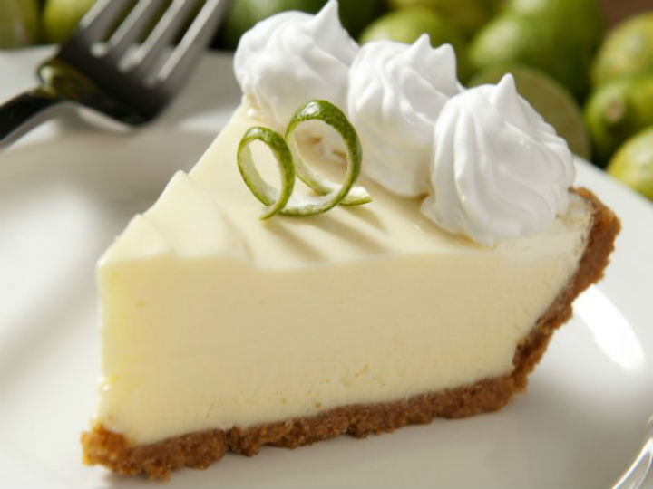

Receta de Pay de limon

Ingredientes:
- 30 Galletas marías molidas
- 1 Barra de mantequilla fundida (90 g)
- 1 Lata de Leche Condensada
- 1 Lata de Leche Evaporada
- 1/4 De taza de jugo de limón colado
Pasos a seguir:
- Para la base, mezcla las galletas con la mantequilla hasta formar una pasta, coloca en un molde para pay, cubre la base y los bordes con la pasta de galleta y refrigera durante 10 minutos.
- Para el relleno, licúa la Leche Condensada LA LECHERA® con la Leche Evaporada CARNATION® CLAVEL® y agrega poco a poco el jugo de limón.
- Vierte sobre la base de galleta y refrigera hasta que cuaje por completo; decora con ralladura de limón y ofrece.